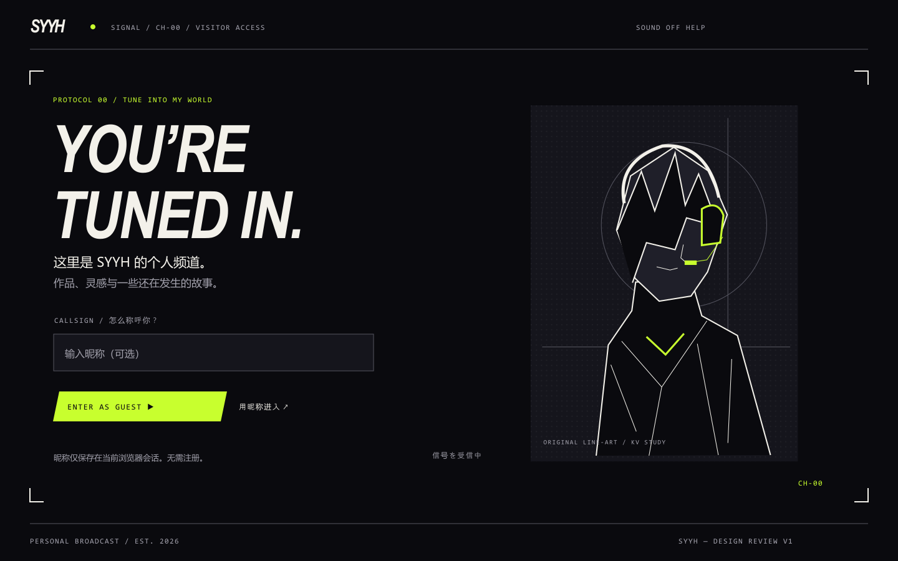
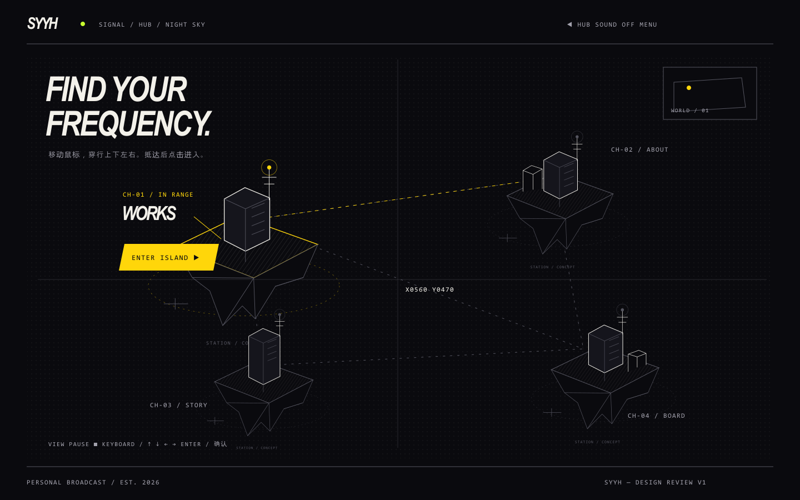
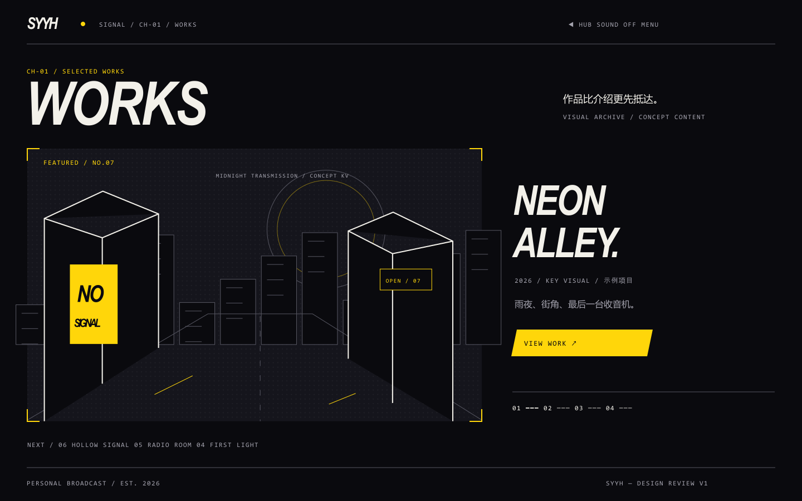
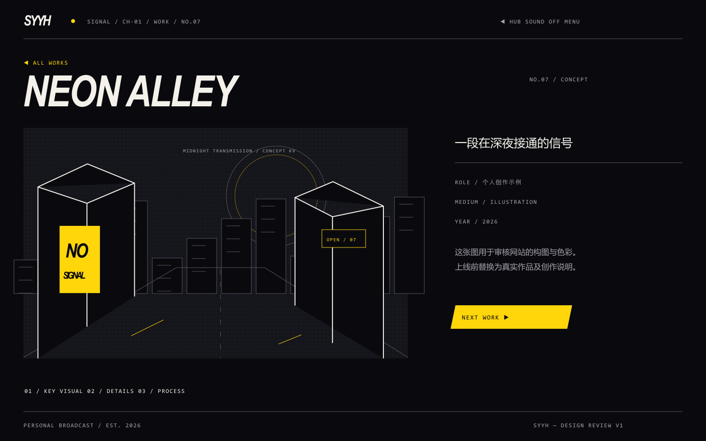
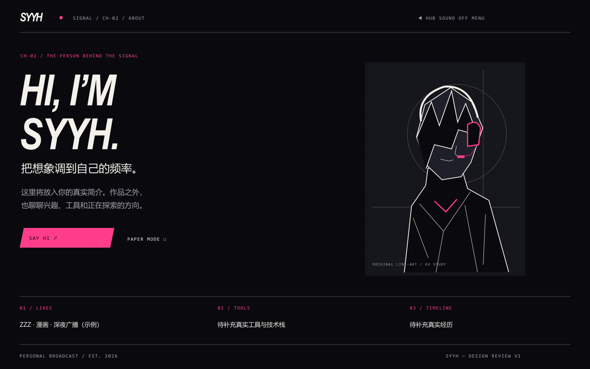
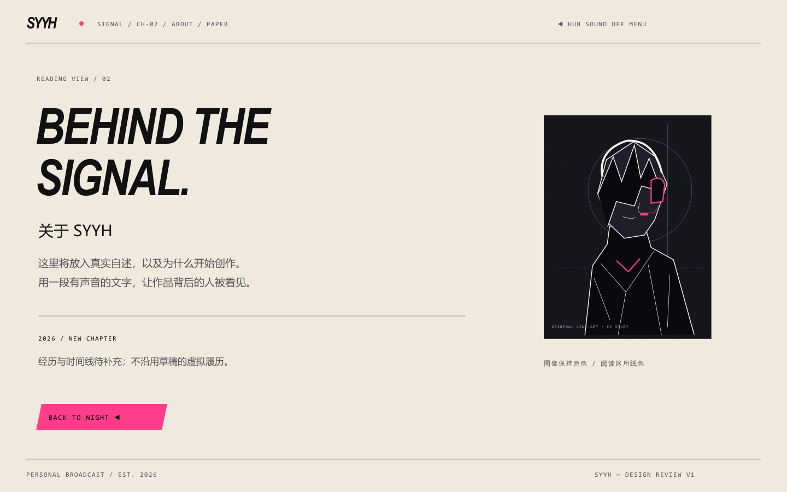
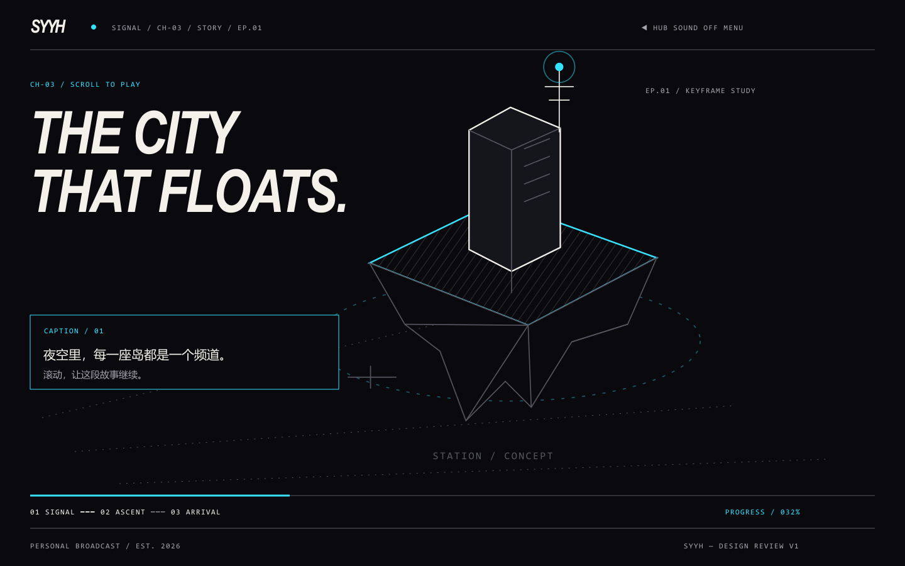
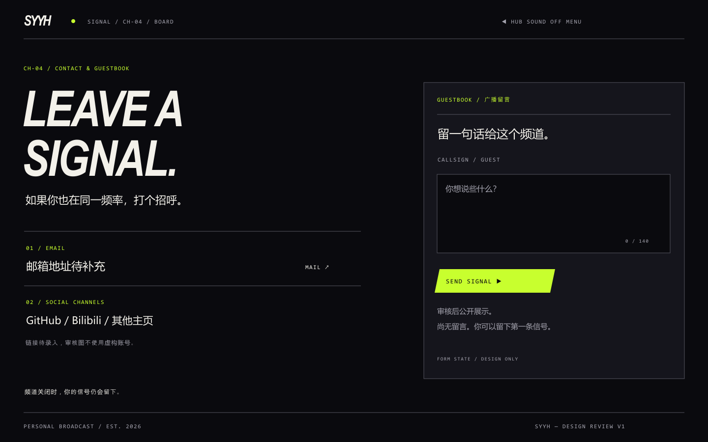
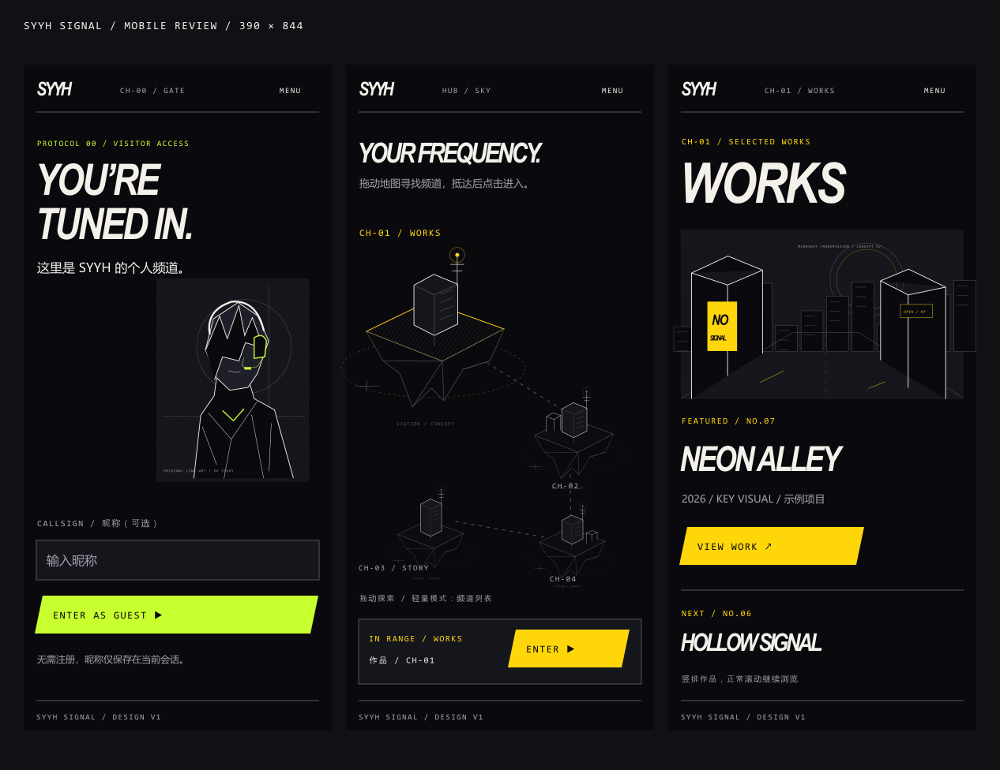
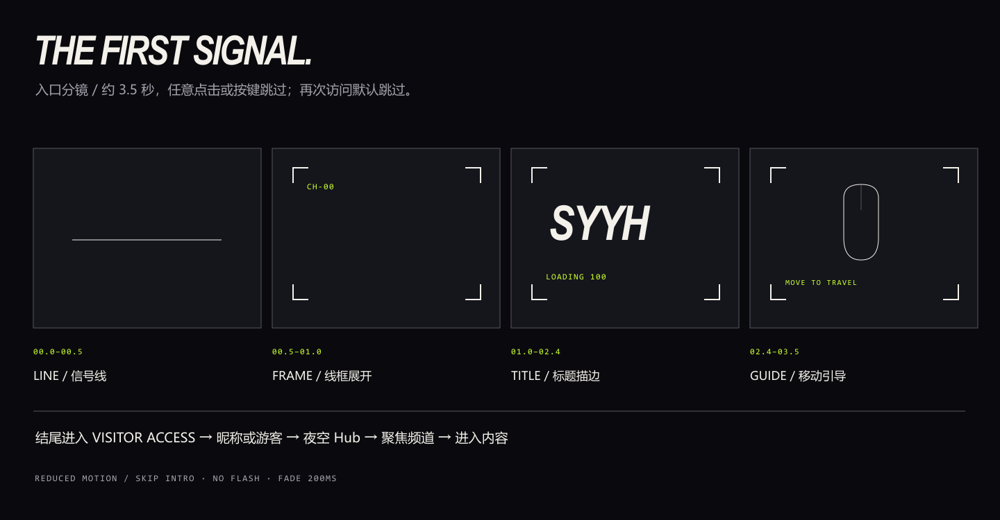

SYYH Signal — 设计审核 v1
DESIGN REVIEW / V1 / STATIC DRAWINGS
SYYH / SIGNAL
夜色广播 · 线稿浮岛 · 个人频道。此画廊只展示静态设计图，按钮、地图和表单尚未实现。图片可点击查看原尺寸；SVG 可继续编辑。审核通过后才搭建正式网站。
01 / VISITOR ACCESS

进入优先，无需注册；昵称仅保存在当前浏览器会话。人物为自有概念线稿，可替换成你的立绘。
02 / NIGHT SKY

鼠标上下左右旅行，抵达后点击进入；只有聚焦频道使用强色。暂停视角与辅助导航帮助准确操作。
03 / WORKS

大图先到达，文字随后。下方继续编号作品胶片；图中项目与街区插画均为审核示例。
04 / WORK DETAIL

独立作品 URL，继续向下阅读过程和细节；返回时恢复原作品位置。
05 / ABOUT — NIGHT

让作品背后的人被看见。真实自述、工具和经历待录入，不使用草稿的虚拟履历。
06 / ABOUT — PAPER

可选纸色阅读视图；深色文字、舒适行长、图像保留原色。
07 / STORY

滚动控制故事；SIGNAL → ASCENT → ARRIVAL。此图是关键帧方向，完整序列素材尚未准备。
08 / BOARD

真实链接待录入；留言经服务端存储及审核公开。没有虚构账号或示例访客留言。
09 / MOBILE — 390 × 844

手机保留 KV，通过拖动探索；作品自然竖排。实现阶段还会验证 320px 和横屏。
10 / INTRO STORYBOARD

约 3.5 秒，随时跳过；再次访问默认跳过。减少动态模式直接到访客入口。